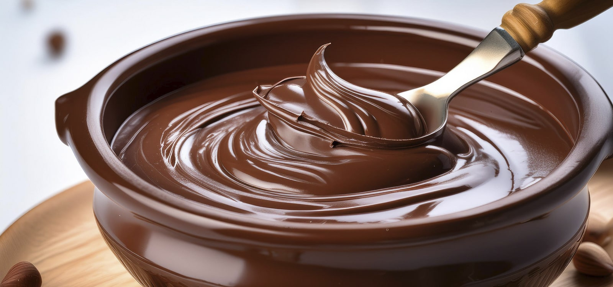
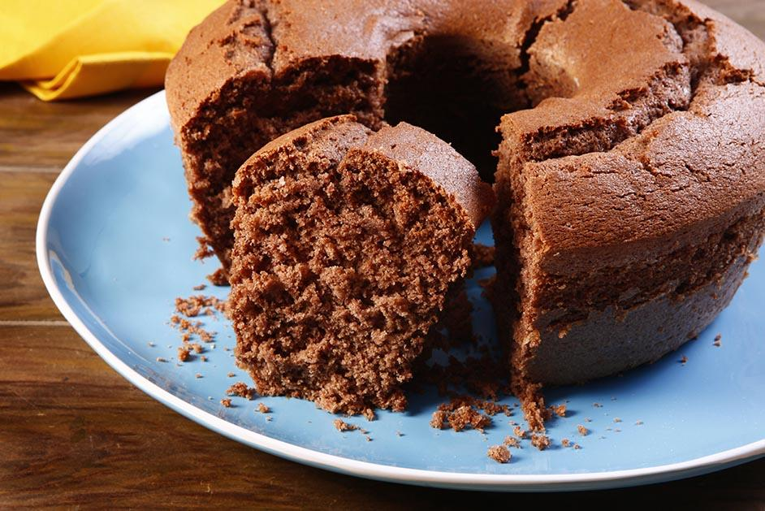
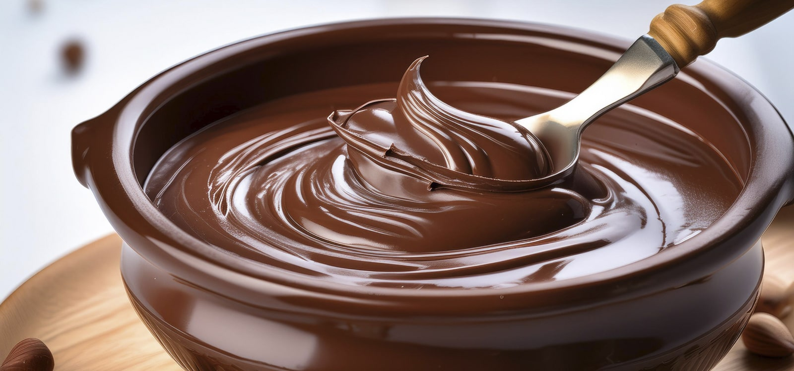
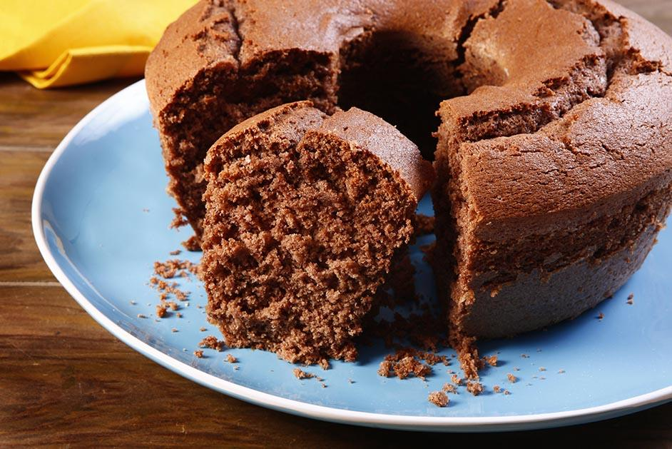

Bem-vindo ao nosso cantinho delicioso de receitas caseiras! 🍰🍫🥄
Aqui você encontra receitas práticas, saborosas e perfeitas para adoçar o seu dia. Explore o mundo dos bolos fofinhos, dos mousses cremosos e do irresistível brigadeiro de colher, feito para encantar qualquer momento.
Seja você um cozinheiro experiente ou apenas alguém em busca de uma sobremesa especial, temos algo para todos os gostos. Sinta-se à vontade para explorar, experimentar e, claro, saborear!
Prepare-se para se apaixonar pela magia da cozinha e descobrir que as melhores receitas são feitas com carinho.
Nosso objetivo é trazer a alegria da cozinha para o seu dia a dia, com receitas que transformam ingredientes simples em momentos inesquecíveis. Cada receita foi escolhida com carinho para que você possa criar sobremesas que não só encantem o paladar, mas também tragam aquele gostinho de aconchego e felicidade.
 


